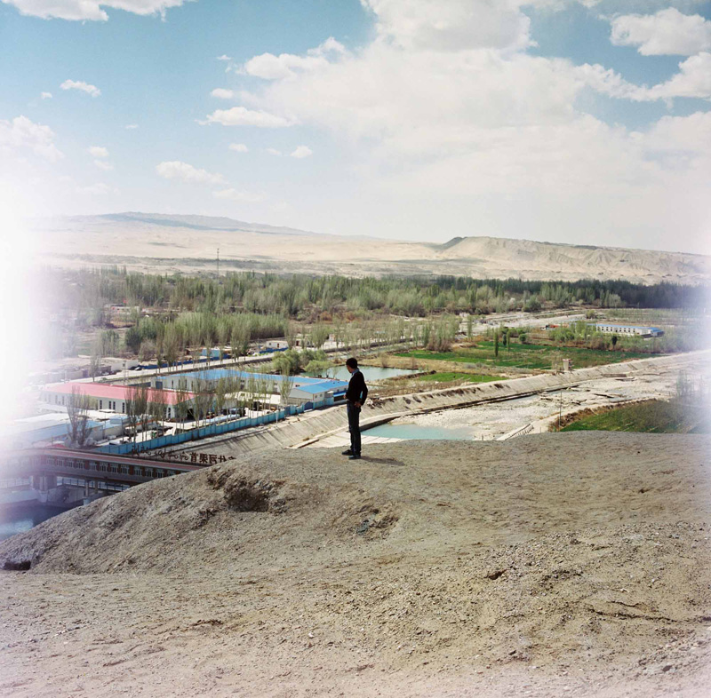
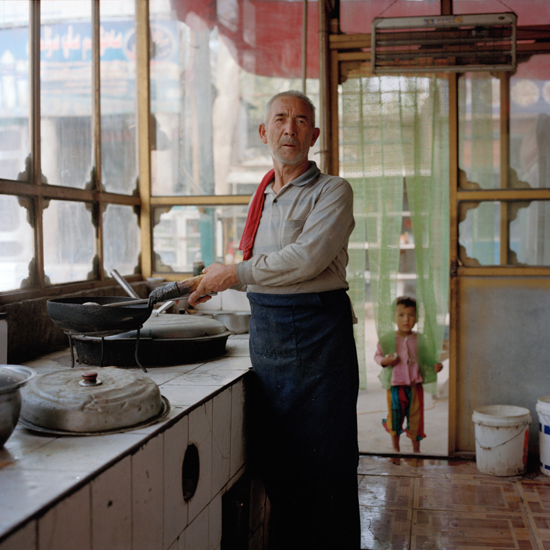

Filling the Gap
(Will get official introduction from Brain) This is a project from Missourian photo editors and photographers. They identified areas of Columbia where they didn’t regularly have photo assignments. Photographers were assigned to come up with a photo story from one of these “coverage gaps.” This project would create a site to display this work.
Jiangnan photo gallery

April_2017. Khotan Xin Jiang. Boyuan Zhang/Alexia Foundation
Jiangnan photo gallery

April 2017. Khotan Xin Jiang. The headwork of Qaraqash Deryasi. Boyuan Zhang/Alexia Foundation
Jiangnan photo gallery

August_2017. Khotan Xin Jiang. Uyghur senior cooking. Boyuan Zhang/Alexia Foundation
Jiangnan photo gallery

August_2017. Khotan Xin Jiang. Uyghur wedding. Boyuan Zhang/Alexia Foundation
Jiangnan photo gallery

August_2017. Khotan Xin Jiang. A wreckage of Santana. Boyuan Zhang/Alexia Foundation
Jiangnan photo gallery
August_2017. Khotan Xin Jiang. The day before the Corban Festival. Boyuan Zhang/Alexia Foundation